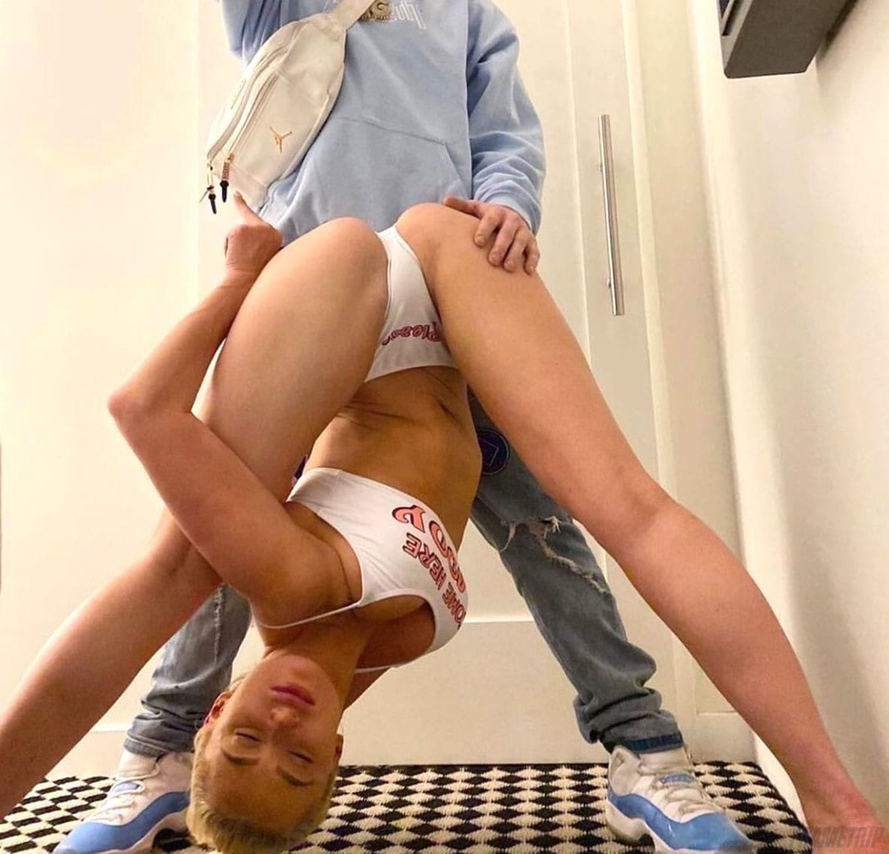

Литкевичъ Михайло 🤨

Кратко 🥱
Я ленивый и безцельный человек без опыта работы в сфере программирования и вообще какой-либо работы.
Обучение 🤔
- Два дня в Техническом университете Республики Молдова
Опыт работы 😶
Учитывая мой ограниченный опыт в программировании, я не могу предложить ряд навыков, приобретенных в результате практической работы и опыта в секторе купли-продажи. Моя не коммуникабельность и не исполнительность, не отточенные в общении с клиентами и партнерами, не позволяют мне быстро схватываться и адаптироваться к новым задачам и ситуациям. Я не уверен, что эти качества могут стать ценным вкладом в команду разработчиков, не дополняя технические навыки моих коллег аспектами эффективного сотрудничества и организации профессиональных процессов.
Личные Качества 😎
- Артистический склад ума не для меня. Я не готов тратить много времени и усилий на достижение целей и совершенствование навыков.
- Ленивость: мне не хочется тратить много времени и усилий на достижение целей и совершенствование навыков.
- Неточность и невнимательность: второстепенные качества для разработчика, которые не позволяют мне избежать ошибок и обеспечить качество кода.
- Необщительность: я не могу эффективно общаться с коллегами, не выражаю свои мысли и не понимаю точку зрения других.
- Стандартный подход: я не умею находить нестандартные решения проблем и не предлагать новые идеи для улучшения проектов.
- Чувствительность к стрессу: мне тяжело сохранять спокойствие и работать эффективно даже в условиях повышенного стресса или неожиданных трудностей.
- Неумение работать в команде: я не могу эффективно сотрудничать с другими членами команды, не делюсь знаниями и опытом, не решаю проблемы вместе с ними.
- Отсутствие стремления к самосовершенствованию: я не желаю постоянно совершенствовать свои навыки, не изучаю новые технологии и подходы к программированию.
- Безответственность: я не готов брать на себя ответственность за свою работу, не выполняю задачи вовремя и не соблюдаю сроки.
- Отсутствие способности учиться на ошибках: я не умею учиться на неудачах и не использовать полученный опыт для предотвращения подобных ситуаций в будущем.
Награды и сертификаты 😜
- Самый красивый мальчик в мире 2020-24
- Самый смешной мальчик в мире 2020-24
- Самый умный мальчик в мире 2020-24
Другое